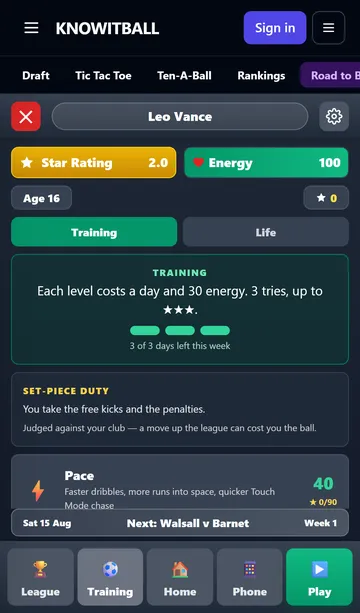
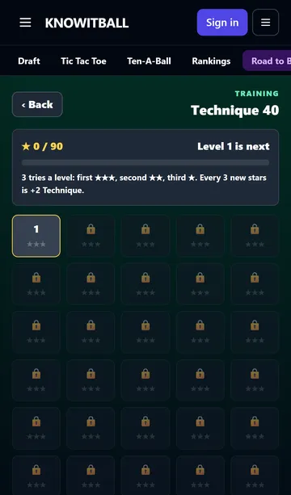
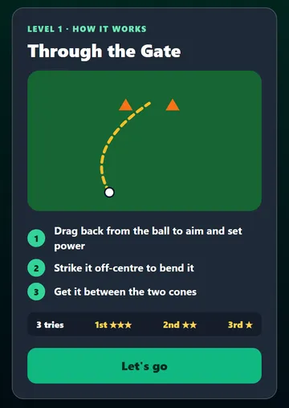
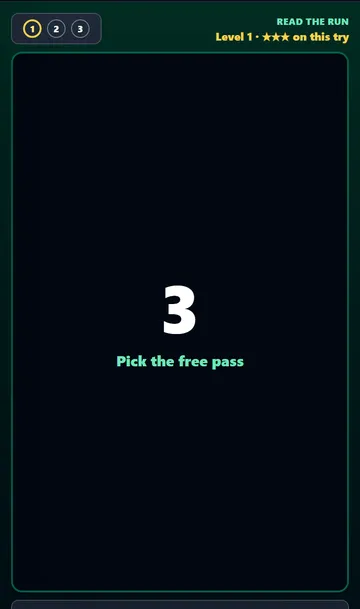
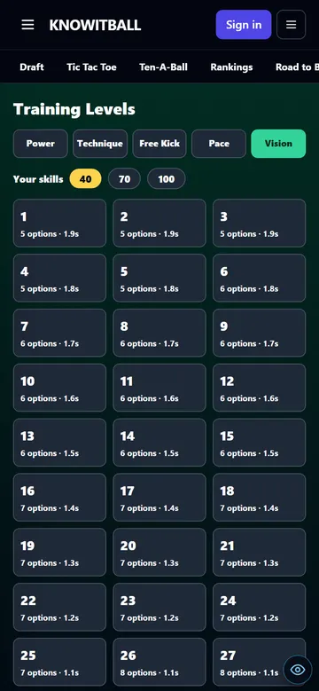

25 September 2026 · branch Mikey · 2 pushed changes + this one · tests: all passing except the 2 that also fail on main
Problem: every training session was a random new picture, so you could never learn it or aim to beat it. Points came in lumps: a perfect session at 18 was worth 10 points, so a young player could go 40 → 100 in about 7 sessions.
Why: the drill's shape followed your skill number on a smooth scale, and its details (where blockers stand, how the keeper moves) were re-rolled every time. Points came from how well each go went, times an age bonus.
Fix: each game now has 30 fixed levels, the same picture every time. Level 1 is the old drill at 40, level 30 the old drill at 100. You get 3 tries: in on the first is ★★★, the second ★★, the third ★. Any star unlocks the next level, and any unlocked level can be replayed for the stars you missed. All 90 stars take a skill from 40 to 100, so 3 new stars is +2. Only new stars count. Age makes no difference. One level costs one day and 30 energy, the same as a session did. seen


What counts as passing: Power and Free kick, score. Technique, between the cones. Pace, reach the line with the ball. Vision, pick the free man in time.
An old save keeps what it had: a skill at 70 opens with levels 1–15 at ★★★ and level 16 next.
Skills still drop if you don't train them for 18 weeks, and pace and power drop with age from 30. Stars are never taken away, and passing any level wins lost points back, one per star.
A small drawing, three one-line steps, the star rule, and a "Let's go" button. Nothing starts, and Vision's timer doesn't run, until you press it. seen
Before every try the pitch is hidden behind a big 3, 2, 1, GO! with "Pick the free pass" under it. Then the players appear and the timer starts. A miss runs the countdown again on the same picture. seen


Problem: vision added team-mates in two jumps (+1 at 40, +2 at 70), so training it from 70 to 100 did nothing. Fix: 40 plays as before, and every 10 points after that adds a quarter of a man. measured (1,500 chances)
At /star-training-dev, and in the admin menu under Star Career. Pick a game, tap any of the 30 levels (all open), and set the player's skills to 40, 70 or 100. While playing: "‹ All levels" and ◀ L13 ▶. Nothing is saved. seen
